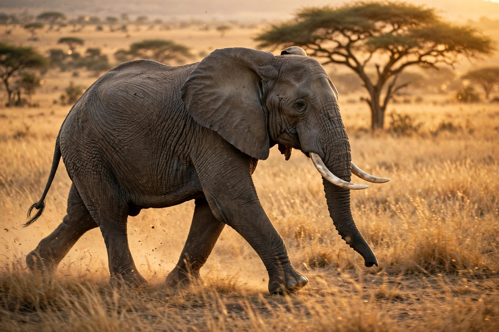

Elephant

[Image: an African bush elephant with large ears and tusks walking across savanna grassland]Elephants are the largest living land animals, forming the family Elephantidae within the order Proboscidea. Three species are recognised: the African bush elephant, the African forest elephant and the Asian elephant. Their most distinctive features are the trunk — a fusion of nose and upper lip containing tens of thousands of muscles and no bone — large ears, tusks of elongated incisor teeth (ivory), columnar legs and the largest brain of any land animal.
Elephants are highly intelligent and social: females and calves live in matriarch-led herds, communicate by rumbles (some below human hearing, transmitted through the ground), mourn and investigate their dead, recognise themselves in mirrors, and remember water sources over decades. They are ecosystem engineers, dispersing seeds and opening woodland.
Conservation
African savanna elephants are listed Endangered and forest elephants Critically Endangered; Asian elephants are Endangered, with only tens of thousands remaining. Poaching for ivory caused catastrophic declines (African numbers fell by roughly a third in 2007–2014 by major censuses), and habitat loss and human–elephant conflict press all populations. CITES banned international ivory trade in 1989, with controversy over occasional legal sales.
Biology
An elephant's lifespan can reach 60–70 years; females gestate for about 22 months, the longest of any land animal, and calves are raised cooperatively. Two 'fingers' (African) or one (Asian) tip the trunk; molars are replaced in conveyor-like sequence through life, and starvation after the last set wears out limits many lives.